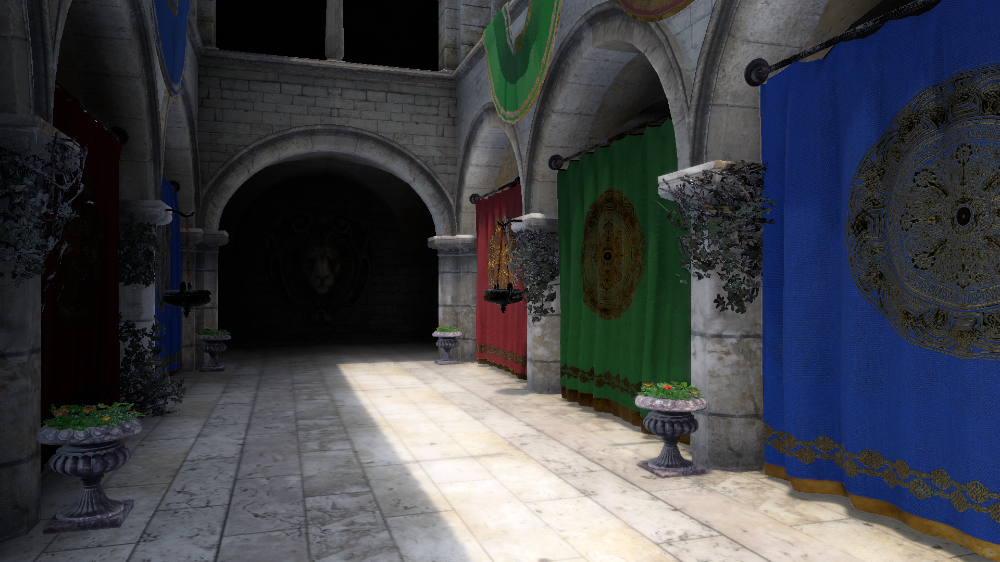
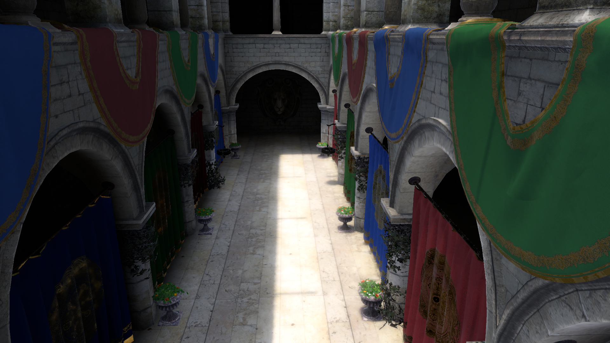
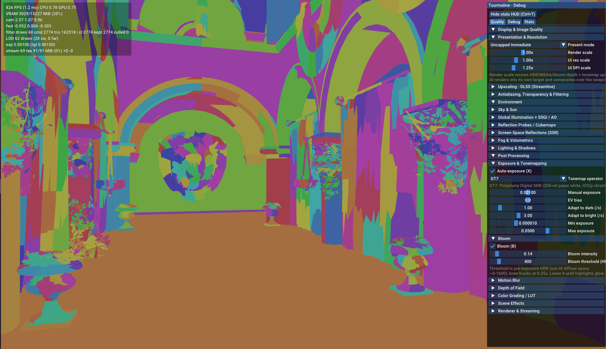
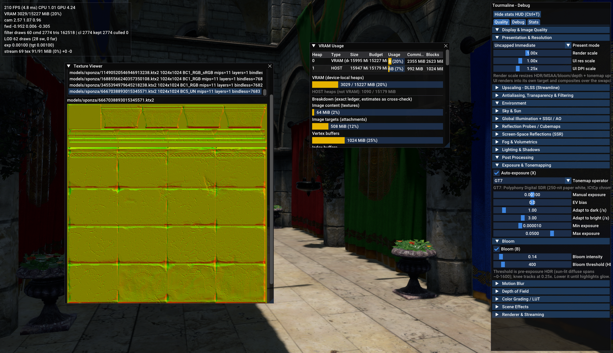
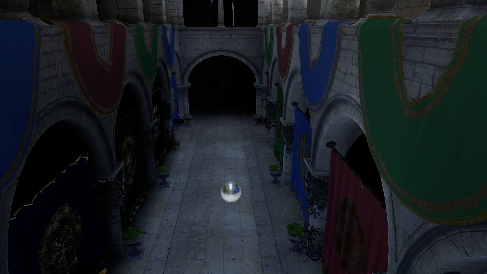
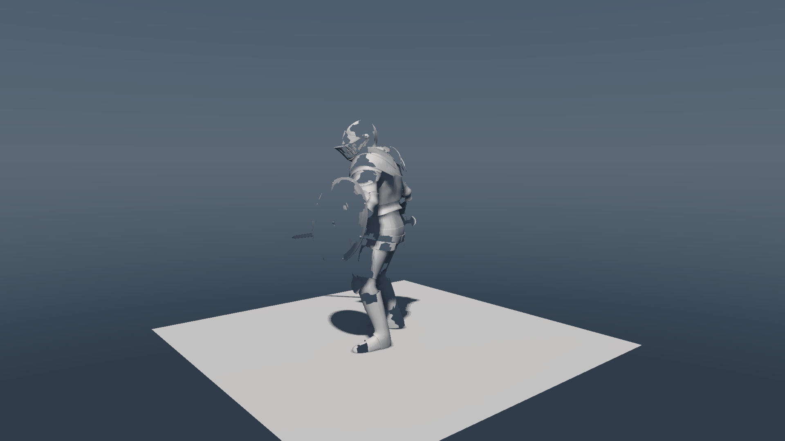

Tourmaline
A C++20 Vulkan 1.3 Rendering Engine
Personal project by Samuel Martin

Real‑time graphics · Vulkan 1.3 · C++20 · Windows
Contents
At a Glance
Language C++20 API Vulkan 1.3 (custom RHI) Core renderer ~14 k‑line WorldRenderer, ~139 k lines engine source Executables 35 plain‑exe tests (ctest) Shaders 112 HLSL → SPIR‑V (DXC) Build system CMake + Ninja (out‑of‑source) Platform Windows 10/11 x64, MSVC 2022+ GPU (dev rig) NVIDIA GeForce RTX 5070 Ti, driver 32.0.16.1742 Render resolution 1920×1080 Commits 821
Project Overview
Tourmaline is a personal learning project exploring modern real‑time graphics techniques. It is not a production engine — APIs and data formats are intentionally unstable and may break without notice. Format versions are magic‑bumped rather than carried forward via compat shims.
Content pipeline
loose glTF/KTX2 → gltf_import → cook → pak_cooker (or GiBaker / CubemapBaker) → *.pak archives (LZ4, magic‑versioned) → App.exe / Editor.exe VFS + artifact DB.
Core rendering pipeline per frame
DrawFrame → AppFrameContext → GfxRenderer → ForwardPlus → shadow atlases → Main → post‑process → swapchain.
Architecture
System Key files Seams / contracts App shell engine/App/app.h, app/src/Host.h+PakApp*.cpp WorldRendererConfig::All/Minimal/FilterOnly Frame renderer engine/Renderer/WorldRenderer.h IFrameRenderer::AppendPasses(AppFrameContext) Push constants engine/Renderer/Renderer.h, engine/shaders/push_constants.hlsli 256 B, codegen + static_assert(sizeof(...)) Rendergraph engine/Rendergraph/*.h Automatic barrier discipline, contract tests GPU scene engine/App/world.h+cluster.h, engine/Scene/scene.h ResolveAndFixup_clusters rebuilds draws/LODs Cook / pak engine/Asset/pak.h, tools/pak_cooker/main.cpp SMP5/KPM5 magic‑bump only, no version field Push‑constant mirroring C++ struct ↔ HLSL layout‑identical Never add sub‑192 fields Strict resources smvk::StrictResources() Call‑site pattern: if (handle.empty()) { OnResourceExhaustion("site"); return; }
Feature Deep Dives
GPU‑driven Geometry
HZB occlusion culling + GPU mesh filter with LOD chains
Indexed draws skipping eligible mesh ranges (exactly‑once discipline)
TOURMALINE_MESH=0 toggles the entire pipeline; contract tests verify MeshDrawEligible table
Shadows
Cascaded sun + per‑spot shadow atlases
EVSM soft shadows + deferred shadow maps (DPS) with debug visualizers
TOURMALINE_EVSM / TOURMALINE_DS pins
Lighting & GI
SSR (screen‑space reflections)
SSAO / SAO ambient occlusion
Ray‑marched volumetric fog with fog‑GI sampling
Lightmap baking (xatlas charting + Embree ray tracing)
Cubemap GI bakes cooked offline into content packs
TOURMALINE_PROBE_PREMIX=1 blends a dominant‑box cubemap; 0 walks per‑pixel
Post‑processing
Auto exposure / bloom / GT7‑style tonemap
Depth of field, motion blur, SMAA (1×/T2x)
Optional DLSS‑SR / Reflex via NVIDIA Streamline interposer
Content Pipeline
loose glTF / KTX2 → import → cook → pack into *.pak archives
VFS + artifact DB serves content on top of paks. tools/cook_bistro.py demonstrates end‑to‑end against the Bistro scene.
Editor & Tooling
ImGui‑based world editor with gizmos
Asset registry (SQLite)
Fiber job backend
Command system with recordable tours
Optick CPU/GPU instrumentation
Deterministic headless benches / golden‑image regression
Selected Screenshots
# Image Description 1 Sponza interior corridor, 1920×1080 2 
Sponza courtyard, default sun, clusters 3 
False‑colored meshlet clusters over Sponza interior, debug HUD 4 
Debug menus and VRAM usage breakdown, Tourmaline Debug panel 5 
GI probe ball (convex‑volume + octree bake), baked ambient 6 
Knight test, manual exposure, bloom off
Technical Highlights
Custom Vulkan 1.3 RHI — bindless descriptor pools, automatic barrier discipline via render graph, staging uploads, timeline semaphoresGPU‑driven culling — HZB + mesh‑filter + LOD chains, exactly‑once draw submissionPush‑constant layout contract — C++ ↔ HLSL mirror static_assert(sizeof(...)), guarded by codegen.py --check; never add sub‑192 fieldsStrict‑resource contract — call sites decide policy; default graceful fallback, --strict / TOURMALINE_STRICT=1 aborts loudly at exhaustion35 plain‑exe tests — hand‑rolled Check() runners, checks=/failures= summaries, wired through ctest; no Google Test dependencyHeadless deterministic capture — TOURMALINE_CAPTURE + --bench auto‑exit, exports exports/screenshot_*.png; golden‑hash regression via tools/golden_capture.pyProbe‑premix — blended‑cubemap + dominant‑box parallax (1 fetch) vs per‑pixel walk (≤8 fetches); tunable via TOURMALINE_PROBE_PREMIXContent pipeline — no legacy conversions; magic‑bumped format versions onlyAI‑assisted development — Muse Spark 1.3 and GLM 5.3 via opencode CLI; final architecture, review and decisions authored
AI Disclosure
Development of Tourmaline was assisted by AI coding agents: Muse Spark 1.3 and GLM 5.3 (Z.ai, driven through the opencode CLI). They contributed to implementation, debugging, testing and documentation across the codebase; the architecture, review and final decisions are the author's.
License
Copyright (c) 2026 Samuel Martin. Released under the MIT License — see LICENSE . Third‑party components keep their own licenses, see THIRD_PARTY_NOTICES.md .